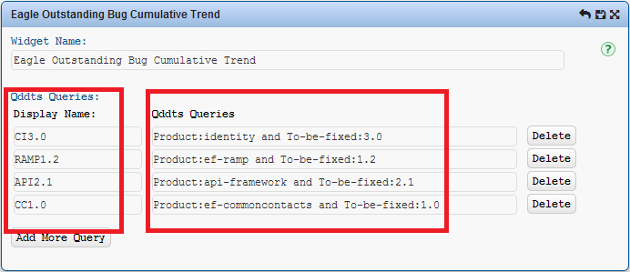

1. Setting Overview
Setting of this widget consists of QDDTS queries, you can add as many as you need. You give each query a display name to inform users what the lines really mean. You can build and test your queries here where login is required before you proceed.
After finishing configuring the widget there are usually delays of several seconds
before trend lines show up.
Fig. 1 Setting
